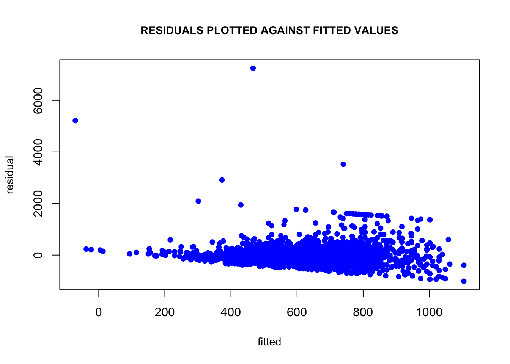

The dataset uswages is drawn as a sample from the Current Population Survey in 1988.
Hints: Useful R functions: data(), lm(), summary(), residuals(), fitted(), which.max(), mean(), median(), cor(), plot(). Note that the experience variable has some negative values which most likely indicate missing data. Those observations should be removed from the analysis.
1. Fit a regression model with weekly wages as the response and years of education and experience as predictors. Present the output.
Regressing weekly wages on years of experience and education gives the following output:
(Table)
1% level. This indicates that a one year increase in education, on average will increase weekly wages by $51.87. A one year increase in work experience will increase weekly wages by $9.33.
2. What percentage of variation in the response is explained by these predictors? (Percentage variance explained is the same as coefficient of determination).
3. Which observation has the largest (positive) residual? Give the case number.
4. Compute the mean and median of the residuals. Explain what the difference between the mean and the median indicates.
5. For two people with the same education and one year difference in experience, what would be the difference in predicted weekly wages?
6. Compute the correlation of the residuals with the fitted values. Plot residuals against fitted values. Explain the value of this correlation using the geometric (projection) interpretation of least squares.

Using R, create a \(10\times3\) matrix \(X\):
\[\begin{align*} X= & \left(\begin{array}{ccc} 1 & 2 & -2\\ 1 & -1 & -2\\ 1 & 3 & -2\\ 1 & 3 & 3\\ 1 & 2 & 3\\ 1 & 1 & 3\\ 1 & 0 & 0\\ 1 & 0 & 0\\ 1 & -1 & 0\\ 1 & 0 & 1 \end{array}\right) \end{align*}\]
Now create a \(3\times1\) matrix \(\beta\) whose entries are 1, -1, and 2. Next create a \(10\times1\) matrix \(\epsilon\) whose entries are IID standard normal (useful command: rnorm). Finally, set \(Y=X\beta+\epsilon\).
1. Calculate \((X'X)^{-1}X'Y\) to estimate \(\beta\). What do you get? (Don’t use the lm command. Do the computation directly. You can use the solve command to compute a matrix inverse.)
2. What is the true variance of \(\hat{\beta}\)? (Remember that the variance of \(\hat{\beta}\) is a \(3\times3\) matrix.) (I say the “true” variance because, in this example, we know the true value of \(\sigma^2\), and so don’t need to estimate it using the residuals.)
3. Use the residuals to estimate \(\sigma^2\). What do you get?
4. Now create a new \(\epsilon\) and re-estimate \(\beta\). Do this 1,000 times, and save all the answers in memory. Make a histogram of the 1,000 values of \(\hat{\beta_1}\). Do the same for \(\hat{\beta_2}\) and \(\hat{\beta_3}\). Also calculate the variance for each of these. Do your answers match with question 2?
5. Once again, re-create \(\epsilon\) 1,000 times. Each time estimate \(\beta\), and also estimate \(\sigma^2\), too. Make a histogram of your 1,000 values of \(\hat{\sigma^2}\). Based on the histogram, does it look like \(\hat{\sigma^2}\) provides a reliable estimate of \(\sigma^2\)? Why do you think this is?
6. Repeat (4) and (5), but instead of using a normal distribution for \(\epsilon\) use some other distribution that also has expectation 0 and variance 1. Do your answers change much? Explain. You might want to experiment with a few different distributions.